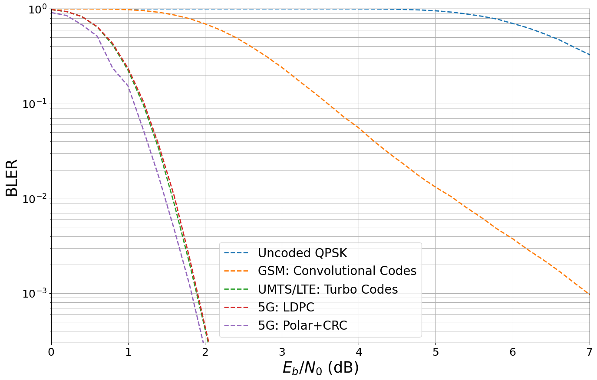
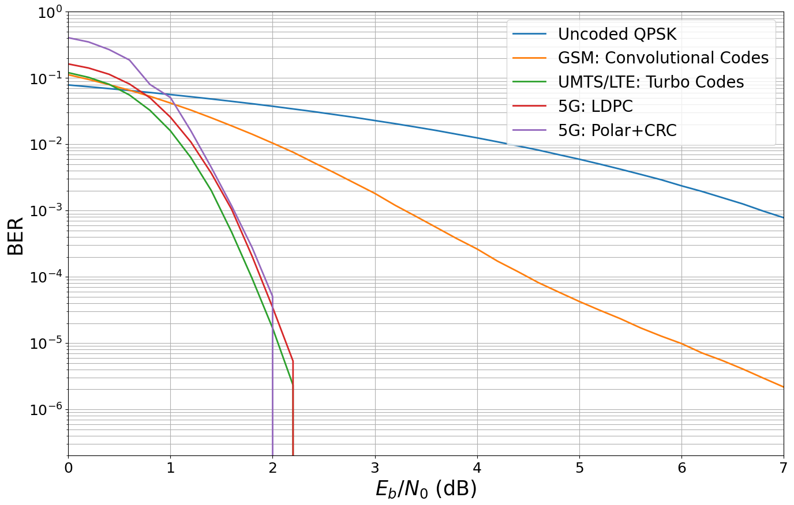
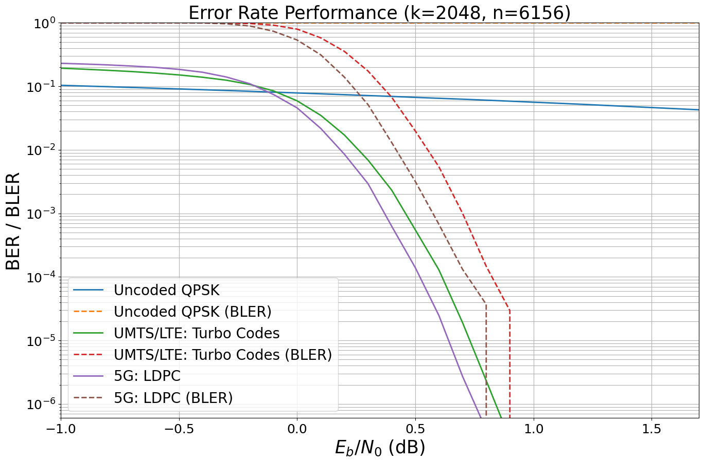
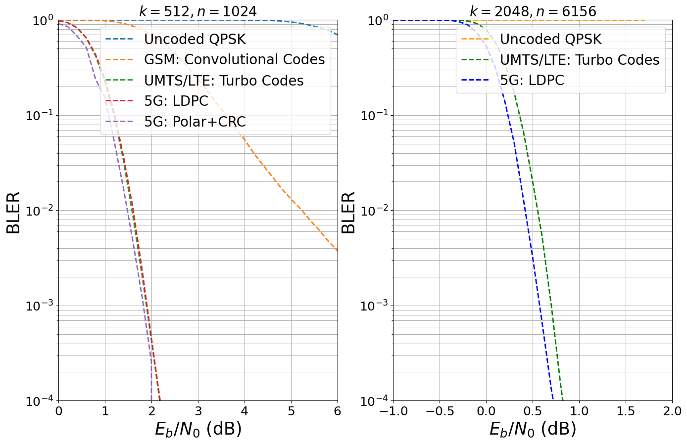

From GSM to 5G - The Evolution of Forward Error Correction#
This notebook compares the different FEC schemes from GSM via UMTS and LTE to 5G NR. Please note that a fair comparison of different coding schemes depends on many aspects such as:
Decoding complexity, latency, and scalability
Level of parallelism of the decoding algorithm and memory access patterns
Error-floor behavior
Rate adaptivity and flexibility
Table of Contents#
Configuration and Imports#
[1]:
# Import Sionna
try:
import sionna.phy
except ImportError as e:
import os
import sys
if 'google.colab' in sys.modules:
# Install Sionna in Google Colab
print("Installing Sionna and restarting the runtime. Please run the cell again.")
os.system("pip install sionna")
os.kill(os.getpid(), 5)
else:
raise e
sionna.phy.config.seed = 42 # Set seed for reproducible random number generation
# Load the required Sionna components
from sionna.phy import Block
from sionna.phy.mapping import Mapper, Demapper, Constellation, BinarySource
from sionna.phy.fec.polar import Polar5GEncoder, Polar5GDecoder
from sionna.phy.fec.ldpc import LDPC5GEncoder, LDPC5GDecoder
from sionna.phy.fec.conv import ConvEncoder, ViterbiDecoder
from sionna.phy.fec.turbo import TurboEncoder, TurboDecoder
from sionna.phy.utils import ebnodb2no, hard_decisions, PlotBER
from sionna.phy.channel import AWGN
[2]:
%matplotlib inline
import matplotlib.pyplot as plt
import numpy as np
import torch
System Model#
[3]:
class System_Model(Block):
"""System model for channel coding BER simulations.
This model allows to simulate BERs over an AWGN channel with
QAM modulation. Arbitrary FEC encoder/decoder layers can be used to
initialize the model.
Parameters
----------
k: int
number of information bits per codeword.
n: int
codeword length.
num_bits_per_symbol: int
number of bits per QAM symbol.
encoder: Sionna Block
A Sionna Block that encodes information bit tensors.
decoder: Sionna Block
A Sionna Block that decodes llr tensors.
demapping_method: str
A string denoting the demapping method. Can be either "app" or "maxlog".
sim_esno: bool
A boolean defaults to False. If true, no rate-adjustment is done for the SNR calculation.
Input
-----
batch_size: int
The batch_size used for the simulation.
ebno_db: float
A float defining the simulation SNR.
Output
------
(u, u_hat):
Tuple:
u: torch.Tensor
A tensor of shape `[batch_size, k] of 0s and 1s containing the transmitted information bits.
u_hat: torch.Tensor
A tensor of shape `[batch_size, k] of 0s and 1s containing the estimated information bits.
"""
def __init__(self,
k,
n,
num_bits_per_symbol,
encoder,
decoder,
demapping_method="app",
sim_esno=False):
super().__init__()
# store values internally
self.k = k
self.n = n
self.sim_esno = sim_esno # disable rate-adjustment for SNR calc
# number of bit per QAM symbol
self.num_bits_per_symbol = num_bits_per_symbol
# init components
self.source = BinarySource()
# initialize mapper and demapper for constellation object
self.constellation = Constellation("qam",
num_bits_per_symbol=self.num_bits_per_symbol)
self.mapper = Mapper(constellation=self.constellation)
self.demapper = Demapper(demapping_method,
constellation=self.constellation)
# the channel can be replaced by more sophisticated models
self.channel = AWGN()
# FEC encoder / decoder
self.encoder = encoder
self.decoder = decoder
def call(self, batch_size, ebno_db):
u = self.source([batch_size, self.k]) # generate random data
if self.encoder is None:
# uncoded transmission
c = u
else:
c = self.encoder(u) # explicitly encode
# calculate noise variance
if self.sim_esno:
no = ebnodb2no(ebno_db,
num_bits_per_symbol=1,
coderate=1)
else:
if self.encoder is None:
# uncoded transmission
coderate = 1
else:
coderate = self.k/self.n
no = ebnodb2no(ebno_db,
num_bits_per_symbol=self.num_bits_per_symbol,
coderate=coderate)
x = self.mapper(c) # map c to symbols x
y = self.channel(x, no) # transmit over AWGN channel
llr_ch = self.demapper(y, no) # demap y to LLRs
if self.decoder is None:
# uncoded transmission
u_hat = hard_decisions(llr_ch)
else:
u_hat = self.decoder(llr_ch) # run FEC decoder (incl. rate-recovery)
return u, u_hat
Error Rate Simulations#
We now compare the different schemes for a codeword length of \(n=1024\) and coderate \(r=0.5\).
Let us define the codes to be simulated.
[4]:
# code parameters
k = 512 # number of information bits per codeword
n = 1024 # desired codeword length
codes_under_test = []
# Uncoded transmission
enc = None
dec = None
name = "Uncoded QPSK"
codes_under_test.append([enc, dec, name])
# Conv. code with Viterbi decoding
enc = ConvEncoder(rate=1/2, constraint_length=5)
dec = ViterbiDecoder(gen_poly=enc.gen_poly, method="soft_llr")
name = "GSM: Convolutional Codes"
codes_under_test.append([enc, dec, name])
# Turbo codes
enc = TurboEncoder(rate=1/2, constraint_length=4, terminate=True)
dec = TurboDecoder(encoder=enc, num_iter=8)
name = "UMTS/LTE: Turbo Codes"
codes_under_test.append([enc, dec, name])
# LDPC codes
enc = LDPC5GEncoder(k, n)
dec = LDPC5GDecoder(encoder=enc, num_iter=40)
name = "5G: LDPC"
codes_under_test.append([enc, dec, name])
# Polar codes
enc = Polar5GEncoder(k, n)
dec = Polar5GDecoder(enc, dec_type="hybSCL", list_size=32)
name = "5G: Polar+CRC"
codes_under_test.append([enc, dec, name])
Generate a new BER plot figure to save and plot simulation results efficiently.
[5]:
ber_plot = PlotBER("")
And run the BER simulation for each code.
[6]:
num_bits_per_symbol = 2 # QPSK
ebno_db = np.arange(0., 8, 0.2) # sim SNR range
# Params
# Conv. code batchsize 40000, compile, 1000 Monte Carlo runs, 2000 block errors
# run ber simulations for each code we have added to the list
for code in codes_under_test:
print("\n Running: " + code[2])
# generate a new model with the given encoder/decoder
torch.cuda.empty_cache()
torch._dynamo.reset()
model = System_Model(k=k,
n=n,
num_bits_per_symbol=num_bits_per_symbol,
encoder=code[0],
decoder=code[1],
sim_esno=False)
if not code[2] == "5G: Polar+CRC":
ber_plot.simulate(model,
ebno_dbs=ebno_db, # SNR to simulate
legend=code[2], # legend string for plotting
max_mc_iter=1000, # run 1000 Monte Carlo runs per SNR point
num_target_block_errors=2000, # continue with next SNR point after 2000 block errors
target_bler=3e-4,
batch_size=40000, # batch-size per Monte Carlo run
soft_estimates=False, # the model returns hard-estimates
early_stop=True, # stop simulation if no error has been detected at current SNR point
show_fig=False, # we show the figure after all results are simulated
add_bler=True, # in case BLER is also interesting
compile_mode="default",
forward_keyboard_interrupt=False);
else:
ber_plot.simulate(model,
ebno_dbs=ebno_db, # SNR to simulate
legend=code[2], # legend string for plotting
max_mc_iter=1000, # run 1000 Monte Carlo runs per SNR point
num_target_block_errors=200, # continue with next SNR point after 2000 block errors
target_bler=3e-4,
batch_size=256, # batch-size per Monte Carlo run
soft_estimates=False, # the model returns hard-estimates
early_stop=True, # stop simulation if no error has been detected at current SNR point
show_fig=False, # we show the figure after all results are simulated
add_bler=True, # in case BLER is also interesting
compile_mode=None,
forward_keyboard_interrupt=False);
Running: Uncoded QPSK
EbNo [dB] | BER | BLER | bit errors | num bits | block errors | num blocks | runtime [s] | status
---------------------------------------------------------------------------------------------------------------------------------------
0.0 | 7.8628e-02 | 1.0000e+00 | 1610302 | 20480000 | 40000 | 40000 | 3.7 |reached target block errors
0.2 | 7.3904e-02 | 1.0000e+00 | 1513555 | 20480000 | 40000 | 40000 | 0.0 |reached target block errors
0.4 | 6.9233e-02 | 1.0000e+00 | 1417898 | 20480000 | 40000 | 40000 | 0.0 |reached target block errors
0.6 | 6.4840e-02 | 1.0000e+00 | 1327929 | 20480000 | 40000 | 40000 | 0.0 |reached target block errors
0.8 | 6.0497e-02 | 1.0000e+00 | 1238981 | 20480000 | 40000 | 40000 | 0.0 |reached target block errors
1.0 | 5.6324e-02 | 1.0000e+00 | 1153516 | 20480000 | 40000 | 40000 | 0.0 |reached target block errors
1.2 | 5.2231e-02 | 1.0000e+00 | 1069684 | 20480000 | 40000 | 40000 | 0.0 |reached target block errors
1.4 | 4.8342e-02 | 1.0000e+00 | 990044 | 20480000 | 40000 | 40000 | 0.0 |reached target block errors
1.6 | 4.4507e-02 | 1.0000e+00 | 911502 | 20480000 | 40000 | 40000 | 0.0 |reached target block errors
1.8 | 4.0951e-02 | 1.0000e+00 | 838674 | 20480000 | 40000 | 40000 | 0.0 |reached target block errors
2.0 | 3.7518e-02 | 1.0000e+00 | 768365 | 20480000 | 40000 | 40000 | 0.0 |reached target block errors
2.2 | 3.4188e-02 | 1.0000e+00 | 700160 | 20480000 | 40000 | 40000 | 0.0 |reached target block errors
2.4 | 3.1158e-02 | 1.0000e+00 | 638114 | 20480000 | 40000 | 40000 | 0.0 |reached target block errors
2.6 | 2.8190e-02 | 1.0000e+00 | 577328 | 20480000 | 40000 | 40000 | 0.0 |reached target block errors
2.8 | 2.5506e-02 | 1.0000e+00 | 522371 | 20480000 | 40000 | 40000 | 0.0 |reached target block errors
3.0 | 2.2833e-02 | 1.0000e+00 | 467614 | 20480000 | 40000 | 40000 | 0.0 |reached target block errors
3.2 | 2.0466e-02 | 9.9995e-01 | 419145 | 20480000 | 39998 | 40000 | 0.0 |reached target block errors
3.4 | 1.8222e-02 | 9.9992e-01 | 373179 | 20480000 | 39997 | 40000 | 0.0 |reached target block errors
3.6 | 1.6182e-02 | 9.9980e-01 | 331406 | 20480000 | 39992 | 40000 | 0.0 |reached target block errors
3.8 | 1.4212e-02 | 9.9945e-01 | 291055 | 20480000 | 39978 | 40000 | 0.0 |reached target block errors
4.0 | 1.2512e-02 | 9.9855e-01 | 256242 | 20480000 | 39942 | 40000 | 0.0 |reached target block errors
4.2 | 1.0901e-02 | 9.9645e-01 | 223261 | 20480000 | 39858 | 40000 | 0.0 |reached target block errors
4.4 | 9.4591e-03 | 9.9192e-01 | 193723 | 20480000 | 39677 | 40000 | 0.0 |reached target block errors
4.6 | 8.1812e-03 | 9.8510e-01 | 167551 | 20480000 | 39404 | 40000 | 0.0 |reached target block errors
4.8 | 6.9707e-03 | 9.7398e-01 | 142759 | 20480000 | 38959 | 40000 | 0.0 |reached target block errors
5.0 | 5.9559e-03 | 9.5393e-01 | 121977 | 20480000 | 38157 | 40000 | 0.0 |reached target block errors
5.2 | 5.0305e-03 | 9.2463e-01 | 103024 | 20480000 | 36985 | 40000 | 0.0 |reached target block errors
5.4 | 4.2201e-03 | 8.8292e-01 | 86428 | 20480000 | 35317 | 40000 | 0.0 |reached target block errors
5.6 | 3.5176e-03 | 8.3620e-01 | 72041 | 20480000 | 33448 | 40000 | 0.0 |reached target block errors
5.8 | 2.9221e-03 | 7.7945e-01 | 59845 | 20480000 | 31178 | 40000 | 0.0 |reached target block errors
6.0 | 2.3646e-03 | 7.0175e-01 | 48426 | 20480000 | 28070 | 40000 | 0.0 |reached target block errors
6.2 | 1.9448e-03 | 6.3040e-01 | 39829 | 20480000 | 25216 | 40000 | 0.0 |reached target block errors
6.4 | 1.5654e-03 | 5.5017e-01 | 32060 | 20480000 | 22007 | 40000 | 0.0 |reached target block errors
6.6 | 1.2596e-03 | 4.7452e-01 | 25796 | 20480000 | 18981 | 40000 | 0.0 |reached target block errors
6.8 | 9.8237e-04 | 3.9410e-01 | 20119 | 20480000 | 15764 | 40000 | 0.0 |reached target block errors
7.0 | 7.8076e-04 | 3.2925e-01 | 15990 | 20480000 | 13170 | 40000 | 0.0 |reached target block errors
7.2 | 5.9370e-04 | 2.6122e-01 | 12159 | 20480000 | 10449 | 40000 | 0.0 |reached target block errors
7.4 | 4.6777e-04 | 2.1385e-01 | 9580 | 20480000 | 8554 | 40000 | 0.0 |reached target block errors
7.6 | 3.4971e-04 | 1.6390e-01 | 7162 | 20480000 | 6556 | 40000 | 0.0 |reached target block errors
7.8 | 2.5928e-04 | 1.2450e-01 | 5310 | 20480000 | 4980 | 40000 | 0.0 |reached target block errors
Running: GSM: Convolutional Codes
EbNo [dB] | BER | BLER | bit errors | num bits | block errors | num blocks | runtime [s] | status
---------------------------------------------------------------------------------------------------------------------------------------
0.0 | 1.1227e-01 | 9.9995e-01 | 2299360 | 20480000 | 39998 | 40000 | 2.1 |reached target block errors
0.2 | 9.5169e-02 | 9.9962e-01 | 1949051 | 20480000 | 39985 | 40000 | 0.5 |reached target block errors
0.4 | 7.9482e-02 | 9.9897e-01 | 1627792 | 20480000 | 39959 | 40000 | 0.3 |reached target block errors
0.6 | 6.5401e-02 | 9.9690e-01 | 1339405 | 20480000 | 39876 | 40000 | 0.3 |reached target block errors
0.8 | 5.3041e-02 | 9.9190e-01 | 1086288 | 20480000 | 39676 | 40000 | 0.3 |reached target block errors
1.0 | 4.1970e-02 | 9.8082e-01 | 859547 | 20480000 | 39233 | 40000 | 0.3 |reached target block errors
1.2 | 3.2855e-02 | 9.5805e-01 | 672870 | 20480000 | 38322 | 40000 | 0.3 |reached target block errors
1.4 | 2.5128e-02 | 9.2017e-01 | 514622 | 20480000 | 36807 | 40000 | 0.3 |reached target block errors
1.6 | 1.8963e-02 | 8.6257e-01 | 388368 | 20480000 | 34503 | 40000 | 0.3 |reached target block errors
1.8 | 1.4204e-02 | 7.8838e-01 | 290889 | 20480000 | 31535 | 40000 | 0.3 |reached target block errors
2.0 | 1.0426e-02 | 6.9627e-01 | 213520 | 20480000 | 27851 | 40000 | 0.3 |reached target block errors
2.2 | 7.6054e-03 | 5.9980e-01 | 155759 | 20480000 | 23992 | 40000 | 0.3 |reached target block errors
2.4 | 5.3230e-03 | 4.9920e-01 | 109016 | 20480000 | 19968 | 40000 | 0.3 |reached target block errors
2.6 | 3.7516e-03 | 4.0048e-01 | 76832 | 20480000 | 16019 | 40000 | 0.3 |reached target block errors
2.8 | 2.6107e-03 | 3.1433e-01 | 53467 | 20480000 | 12573 | 40000 | 0.3 |reached target block errors
3.0 | 1.8174e-03 | 2.4133e-01 | 37220 | 20480000 | 9653 | 40000 | 0.3 |reached target block errors
3.2 | 1.1991e-03 | 1.7983e-01 | 24558 | 20480000 | 7193 | 40000 | 0.3 |reached target block errors
3.4 | 8.2046e-04 | 1.3430e-01 | 16803 | 20480000 | 5372 | 40000 | 0.3 |reached target block errors
3.6 | 5.5811e-04 | 9.9450e-02 | 11430 | 20480000 | 3978 | 40000 | 0.3 |reached target block errors
3.8 | 3.7876e-04 | 7.3075e-02 | 7757 | 20480000 | 2923 | 40000 | 0.3 |reached target block errors
4.0 | 2.6343e-04 | 5.5400e-02 | 5395 | 20480000 | 2216 | 40000 | 0.3 |reached target block errors
4.2 | 1.7263e-04 | 3.9988e-02 | 7071 | 40960000 | 3199 | 80000 | 0.6 |reached target block errors
4.4 | 1.1975e-04 | 2.9738e-02 | 4905 | 40960000 | 2379 | 80000 | 0.6 |reached target block errors
4.6 | 8.1803e-05 | 2.2525e-02 | 5026 | 61440000 | 2703 | 120000 | 0.9 |reached target block errors
4.8 | 5.8805e-05 | 1.6908e-02 | 3613 | 61440000 | 2029 | 120000 | 0.9 |reached target block errors
5.0 | 4.2505e-05 | 1.3150e-02 | 3482 | 81920000 | 2104 | 160000 | 1.2 |reached target block errors
5.2 | 3.1348e-05 | 1.0485e-02 | 3210 | 102400000 | 2097 | 200000 | 1.5 |reached target block errors
5.4 | 2.3424e-05 | 8.0143e-03 | 3358 | 143360000 | 2244 | 280000 | 2.1 |reached target block errors
5.6 | 1.6962e-05 | 6.2500e-03 | 2779 | 163840000 | 2000 | 320000 | 2.4 |reached target block errors
5.8 | 1.2775e-05 | 4.7659e-03 | 2878 | 225280000 | 2097 | 440000 | 3.3 |reached target block errors
6.0 | 9.8424e-06 | 3.7696e-03 | 2822 | 286720000 | 2111 | 560000 | 4.2 |reached target block errors
6.2 | 7.1045e-06 | 2.8764e-03 | 2619 | 368640000 | 2071 | 720000 | 5.3 |reached target block errors
6.4 | 5.4560e-06 | 2.2511e-03 | 2570 | 471040000 | 2071 | 920000 | 6.8 |reached target block errors
6.6 | 4.0645e-06 | 1.7259e-03 | 2414 | 593920000 | 2002 | 1160000 | 8.6 |reached target block errors
6.8 | 2.9635e-06 | 1.2936e-03 | 2367 | 798720000 | 2018 | 1560000 | 11.5 |reached target block errors
7.0 | 2.1747e-06 | 9.7212e-04 | 2316 | 1064960000 | 2022 | 2080000 | 15.4 |reached target block errors
7.2 | 1.6149e-06 | 7.3297e-04 | 2282 | 1413120000 | 2023 | 2760000 | 20.5 |reached target block errors
7.4 | 1.2724e-06 | 5.8488e-04 | 2241 | 1761280000 | 2012 | 3440000 | 25.7 |reached target block errors
7.6 | 9.1408e-07 | 4.2564e-04 | 2209 | 2416640000 | 2009 | 4720000 | 35.3 |reached target block errors
7.8 | 6.3213e-07 | 3.0015e-04 | 2162 | 3420160000 | 2005 | 6680000 | 50.2 |reached target block errors
Running: UMTS/LTE: Turbo Codes
EbNo [dB] | BER | BLER | bit errors | num bits | block errors | num blocks | runtime [s] | status
---------------------------------------------------------------------------------------------------------------------------------------
0.0 | 1.2064e-01 | 9.8223e-01 | 2470616 | 20480000 | 39289 | 40000 | 5.8 |reached target block errors
0.2 | 1.0232e-01 | 9.3540e-01 | 2095564 | 20480000 | 37416 | 40000 | 4.0 |reached target block errors
0.4 | 8.0573e-02 | 8.2998e-01 | 1650143 | 20480000 | 33199 | 40000 | 3.9 |reached target block errors
0.6 | 5.5438e-02 | 6.4312e-01 | 1135365 | 20480000 | 25725 | 40000 | 3.9 |reached target block errors
0.8 | 3.2618e-02 | 4.1755e-01 | 668013 | 20480000 | 16702 | 40000 | 3.9 |reached target block errors
1.0 | 1.6011e-02 | 2.2515e-01 | 327899 | 20480000 | 9006 | 40000 | 4.0 |reached target block errors
1.2 | 6.3203e-03 | 9.6900e-02 | 129439 | 20480000 | 3876 | 40000 | 4.0 |reached target block errors
1.4 | 2.0092e-03 | 3.3075e-02 | 82296 | 40960000 | 2646 | 80000 | 7.9 |reached target block errors
1.6 | 4.7038e-04 | 8.7917e-03 | 57800 | 122880000 | 2110 | 240000 | 23.8 |reached target block errors
1.8 | 9.4348e-05 | 2.0490e-03 | 48306 | 512000000 | 2049 | 1000000 | 99.3 |reached target block errors
2.0 | 1.6878e-05 | 4.2500e-04 | 40788 | 2416640000 | 2006 | 4720000 | 471.2 |reached target block errors
2.2 | 2.3230e-06 | 8.2919e-05 | 28688 | 12349440000 | 2000 | 24120000 | 2401.6 |reached target block errors
Simulation stopped as target BLER is reached @ EbNo = 2.2 dB.
Running: 5G: LDPC
EbNo [dB] | BER | BLER | bit errors | num bits | block errors | num blocks | runtime [s] | status
---------------------------------------------------------------------------------------------------------------------------------------
0.0 | 1.6333e-01 | 9.8288e-01 | 3344916 | 20480000 | 39315 | 40000 | 24.0 |reached target block errors
0.2 | 1.4174e-01 | 9.3747e-01 | 2902925 | 20480000 | 37499 | 40000 | 0.8 |reached target block errors
0.4 | 1.1403e-01 | 8.2855e-01 | 2335248 | 20480000 | 33142 | 40000 | 0.8 |reached target block errors
0.6 | 8.1293e-02 | 6.4882e-01 | 1664888 | 20480000 | 25953 | 40000 | 0.8 |reached target block errors
0.8 | 5.0391e-02 | 4.3188e-01 | 1032010 | 20480000 | 17275 | 40000 | 0.8 |reached target block errors
1.0 | 2.5704e-02 | 2.3630e-01 | 526419 | 20480000 | 9452 | 40000 | 0.8 |reached target block errors
1.2 | 1.0866e-02 | 1.0540e-01 | 222529 | 20480000 | 4216 | 40000 | 0.8 |reached target block errors
1.4 | 3.6726e-03 | 3.6437e-02 | 150429 | 40960000 | 2915 | 80000 | 1.6 |reached target block errors
1.6 | 1.0378e-03 | 1.0630e-02 | 106272 | 102400000 | 2126 | 200000 | 4.1 |reached target block errors
1.8 | 2.0396e-04 | 2.3523e-03 | 91895 | 450560000 | 2070 | 880000 | 18.1 |reached target block errors
2.0 | 3.4650e-05 | 4.5293e-04 | 78770 | 2273280000 | 2011 | 4440000 | 94.0 |reached target block errors
2.2 | 5.3539e-06 | 9.0388e-05 | 60745 | 11345920000 | 2003 | 22160000 | 462.2 |reached target block errors
Simulation stopped as target BLER is reached @ EbNo = 2.2 dB.
Running: 5G: Polar+CRC
EbNo [dB] | BER | BLER | bit errors | num bits | block errors | num blocks | runtime [s] | status
---------------------------------------------------------------------------------------------------------------------------------------
0.0 | 4.0623e-01 | 9.1406e-01 | 53246 | 131072 | 234 | 256 | 10.6 |reached target block errors
0.2 | 3.5043e-01 | 8.5156e-01 | 45931 | 131072 | 218 | 256 | 10.9 |reached target block errors
0.4 | 2.6915e-01 | 6.7969e-01 | 70555 | 262144 | 348 | 512 | 20.6 |reached target block errors
0.6 | 1.8696e-01 | 5.1367e-01 | 49010 | 262144 | 263 | 512 | 18.2 |reached target block errors
0.8 | 8.0093e-02 | 2.3730e-01 | 41992 | 524288 | 243 | 1024 | 33.5 |reached target block errors
1.0 | 5.0869e-02 | 1.5365e-01 | 40005 | 786432 | 236 | 1536 | 46.6 |reached target block errors
1.2 | 1.6019e-02 | 5.2734e-02 | 33595 | 2097152 | 216 | 4096 | 100.9 |reached target block errors
1.4 | 4.4879e-03 | 1.6872e-02 | 27647 | 6160384 | 203 | 12032 | 232.2 |reached target block errors
1.6 | 1.1732e-03 | 4.7348e-03 | 25373 | 21626880 | 200 | 42240 | 595.1 |reached target block errors
1.8 | 2.7621e-04 | 1.2245e-03 | 23098 | 83623936 | 200 | 163328 | 1504.1 |reached target block errors
2.0 | 5.0728e-05 | 2.5391e-04 | 6649 | 131072000 | 65 | 256000 | 1480.2 |reached max iterations
Simulation stopped as target BLER is reached @ EbNo = 2.0 dB.
And show the final performance
[7]:
# remove "(BLER)" labels from legend
for idx, l in enumerate(ber_plot.legend):
ber_plot.legend[idx] = l.replace(" (BLER)", "")
# and plot the BLER
ber_plot(xlim=[0, 7], ylim=[3.e-4, 1], show_ber=False)

[8]:
# BER
ber_plot(xlim=[0, 7], ylim=[2.e-7, 1], show_bler=False)

Results for Longer Codewords#
In particular for the data channels, longer codewords are usually required. For these applications, LDPC and Turbo codes are the workhorse of 5G and LTE, respectively.
Let’s compare LDPC and Turbo codes for \(k=6144\) information bits and coderate \(r=1/3\).
[9]:
# code parameters
k = 2048 # number of information bits per codeword
n = 6156 # desired codeword length (including termination bits)
codes_under_test = []
# Uncoded QPSK
enc = None
dec = None
name = "Uncoded QPSK"
codes_under_test.append([enc, dec, name])
#Turbo. codes
enc = TurboEncoder(rate=1/3, constraint_length=4, terminate=True)
dec = TurboDecoder(encoder=enc, num_iter=8)
name = "UMTS/LTE: Turbo Codes"
codes_under_test.append([enc, dec, name])
# LDPC
enc = LDPC5GEncoder(k, n)
dec = LDPC5GDecoder(encoder=enc, num_iter=40)
name = "5G: LDPC"
codes_under_test.append([enc, dec, name])
[10]:
ber_plot_long = PlotBER(f"Error Rate Performance (k={k}, n={n})")
[11]:
num_bits_per_symbol = 2 # QPSK
ebno_db = np.arange(-1, 1.8, 0.1) # sim SNR range
# run ber simulations for each code we have added to the list
for code in codes_under_test:
print("\n Running: " + code[2])
# generate a new model with the given encoder/decoder
torch.cuda.empty_cache()
torch._dynamo.reset()
model = System_Model(k=k,
n=n,
num_bits_per_symbol=num_bits_per_symbol,
encoder=code[0],
decoder=code[1],
sim_esno=False)
# the first argument must be a callable (function) that yields u and u_hat for batch_size and ebno
ber_plot_long.simulate(model, # the function have defined previously
ebno_dbs=ebno_db, # SNR to simulate
legend=code[2], # legend string for plotting
max_mc_iter=1000, # run 100 Monte Carlo runs per SNR point
num_target_block_errors=500, # continue with next SNR point after 2000 bit errors
target_ber=6e-7,
batch_size=10000, # batch-size per Monte Carlo run
soft_estimates=False, # the model returns hard-estimates
early_stop=True, # stop simulation if no error has been detected at current SNR point
show_fig=False, # we show the figure after all results are simulated
add_bler=True, # in case BLER is also interesting
compile_mode="default",
forward_keyboard_interrupt=False); # should be True in a loop
Running: Uncoded QPSK
EbNo [dB] | BER | BLER | bit errors | num bits | block errors | num blocks | runtime [s] | status
---------------------------------------------------------------------------------------------------------------------------------------
-1.0 | 1.0375e-01 | 1.0000e+00 | 2124739 | 20480000 | 10000 | 10000 | 0.7 |reached target block errors
-0.9 | 1.0113e-01 | 1.0000e+00 | 2071076 | 20480000 | 10000 | 10000 | 0.0 |reached target block errors
-0.8 | 9.8687e-02 | 1.0000e+00 | 2021105 | 20480000 | 10000 | 10000 | 0.0 |reached target block errors
-0.7 | 9.6015e-02 | 1.0000e+00 | 1966395 | 20480000 | 10000 | 10000 | 0.0 |reached target block errors
-0.6 | 9.3497e-02 | 1.0000e+00 | 1914813 | 20480000 | 10000 | 10000 | 0.0 |reached target block errors
-0.5 | 9.0963e-02 | 1.0000e+00 | 1862918 | 20480000 | 10000 | 10000 | 0.0 |reached target block errors
-0.4 | 8.8435e-02 | 1.0000e+00 | 1811152 | 20480000 | 10000 | 10000 | 0.0 |reached target block errors
-0.3 | 8.6013e-02 | 1.0000e+00 | 1761549 | 20480000 | 10000 | 10000 | 0.0 |reached target block errors
-0.2 | 8.3581e-02 | 1.0000e+00 | 1711741 | 20480000 | 10000 | 10000 | 0.0 |reached target block errors
-0.1 | 8.1062e-02 | 1.0000e+00 | 1660141 | 20480000 | 10000 | 10000 | 0.0 |reached target block errors
-0.0 | 7.8659e-02 | 1.0000e+00 | 1610927 | 20480000 | 10000 | 10000 | 0.0 |reached target block errors
0.1 | 7.6257e-02 | 1.0000e+00 | 1561750 | 20480000 | 10000 | 10000 | 0.0 |reached target block errors
0.2 | 7.3902e-02 | 1.0000e+00 | 1513507 | 20480000 | 10000 | 10000 | 0.0 |reached target block errors
0.3 | 7.1619e-02 | 1.0000e+00 | 1466756 | 20480000 | 10000 | 10000 | 0.0 |reached target block errors
0.4 | 6.9390e-02 | 1.0000e+00 | 1421104 | 20480000 | 10000 | 10000 | 0.0 |reached target block errors
0.5 | 6.7019e-02 | 1.0000e+00 | 1372548 | 20480000 | 10000 | 10000 | 0.0 |reached target block errors
0.6 | 6.4807e-02 | 1.0000e+00 | 1327239 | 20480000 | 10000 | 10000 | 0.0 |reached target block errors
0.7 | 6.2735e-02 | 1.0000e+00 | 1284815 | 20480000 | 10000 | 10000 | 0.0 |reached target block errors
0.8 | 6.0580e-02 | 1.0000e+00 | 1240671 | 20480000 | 10000 | 10000 | 0.0 |reached target block errors
0.9 | 5.8418e-02 | 1.0000e+00 | 1196393 | 20480000 | 10000 | 10000 | 0.0 |reached target block errors
1.0 | 5.6264e-02 | 1.0000e+00 | 1152291 | 20480000 | 10000 | 10000 | 0.0 |reached target block errors
1.1 | 5.4250e-02 | 1.0000e+00 | 1111047 | 20480000 | 10000 | 10000 | 0.0 |reached target block errors
1.2 | 5.2245e-02 | 1.0000e+00 | 1069980 | 20480000 | 10000 | 10000 | 0.0 |reached target block errors
1.3 | 5.0188e-02 | 1.0000e+00 | 1027842 | 20480000 | 10000 | 10000 | 0.0 |reached target block errors
1.4 | 4.8232e-02 | 1.0000e+00 | 987783 | 20480000 | 10000 | 10000 | 0.0 |reached target block errors
1.5 | 4.6363e-02 | 1.0000e+00 | 949523 | 20480000 | 10000 | 10000 | 0.0 |reached target block errors
1.6 | 4.4518e-02 | 1.0000e+00 | 911722 | 20480000 | 10000 | 10000 | 0.0 |reached target block errors
1.7 | 4.2730e-02 | 1.0000e+00 | 875102 | 20480000 | 10000 | 10000 | 0.0 |reached target block errors
Running: UMTS/LTE: Turbo Codes
EbNo [dB] | BER | BLER | bit errors | num bits | block errors | num blocks | runtime [s] | status
---------------------------------------------------------------------------------------------------------------------------------------
-1.0 | 1.9291e-01 | 1.0000e+00 | 3950804 | 20480000 | 10000 | 10000 | 17.2 |reached target block errors
-0.9 | 1.8607e-01 | 1.0000e+00 | 3810786 | 20480000 | 10000 | 10000 | 14.7 |reached target block errors
-0.8 | 1.7869e-01 | 1.0000e+00 | 3659632 | 20480000 | 10000 | 10000 | 14.7 |reached target block errors
-0.7 | 1.7084e-01 | 1.0000e+00 | 3498859 | 20480000 | 10000 | 10000 | 14.7 |reached target block errors
-0.6 | 1.6148e-01 | 1.0000e+00 | 3307032 | 20480000 | 10000 | 10000 | 14.8 |reached target block errors
-0.5 | 1.5123e-01 | 9.9990e-01 | 3097118 | 20480000 | 9999 | 10000 | 14.8 |reached target block errors
-0.4 | 1.3898e-01 | 9.9930e-01 | 2846298 | 20480000 | 9993 | 10000 | 14.9 |reached target block errors
-0.3 | 1.2501e-01 | 9.9510e-01 | 2560299 | 20480000 | 9951 | 10000 | 14.8 |reached target block errors
-0.2 | 1.0689e-01 | 9.7480e-01 | 2189101 | 20480000 | 9748 | 10000 | 14.9 |reached target block errors
-0.1 | 8.4846e-02 | 9.1780e-01 | 1737649 | 20480000 | 9178 | 10000 | 14.8 |reached target block errors
-0.0 | 5.9150e-02 | 7.9580e-01 | 1211386 | 20480000 | 7958 | 10000 | 14.7 |reached target block errors
0.1 | 3.4908e-02 | 5.7950e-01 | 714911 | 20480000 | 5795 | 10000 | 14.7 |reached target block errors
0.2 | 1.7139e-02 | 3.5490e-01 | 351013 | 20480000 | 3549 | 10000 | 14.6 |reached target block errors
0.3 | 6.9062e-03 | 1.7410e-01 | 141439 | 20480000 | 1741 | 10000 | 14.7 |reached target block errors
0.4 | 2.3267e-03 | 6.7400e-02 | 47651 | 20480000 | 674 | 10000 | 14.7 |reached target block errors
0.5 | 5.5098e-04 | 1.9833e-02 | 33852 | 61440000 | 595 | 30000 | 43.8 |reached target block errors
0.6 | 1.2886e-04 | 5.4000e-03 | 26391 | 204800000 | 540 | 100000 | 146.0 |reached target block errors
0.7 | 1.9028e-05 | 1.0020e-03 | 19485 | 1024000000 | 501 | 500000 | 726.8 |reached target block errors
0.8 | 2.3351e-06 | 1.4749e-04 | 16212 | 6942720000 | 500 | 3390000 | 4924.7 |reached target block errors
0.9 | 2.8027e-07 | 2.9600e-05 | 5740 | 20480000000 | 296 | 10000000 | 14576.3 |reached max iterations
Simulation stopped as target BER is reached @ EbNo = 0.9 dB.
Running: 5G: LDPC
EbNo [dB] | BER | BLER | bit errors | num bits | block errors | num blocks | runtime [s] | status
---------------------------------------------------------------------------------------------------------------------------------------
-1.0 | 2.3028e-01 | 1.0000e+00 | 4716178 | 20480000 | 10000 | 10000 | 25.7 |reached target block errors
-0.9 | 2.2436e-01 | 1.0000e+00 | 4594827 | 20480000 | 10000 | 10000 | 1.2 |reached target block errors
-0.8 | 2.1745e-01 | 1.0000e+00 | 4453366 | 20480000 | 10000 | 10000 | 1.2 |reached target block errors
-0.7 | 2.0868e-01 | 1.0000e+00 | 4273751 | 20480000 | 10000 | 10000 | 1.2 |reached target block errors
-0.6 | 1.9895e-01 | 9.9960e-01 | 4074446 | 20480000 | 9996 | 10000 | 1.2 |reached target block errors
-0.5 | 1.8486e-01 | 9.9870e-01 | 3786021 | 20480000 | 9987 | 10000 | 1.2 |reached target block errors
-0.4 | 1.6662e-01 | 9.9320e-01 | 3412417 | 20480000 | 9932 | 10000 | 1.2 |reached target block errors
-0.3 | 1.4036e-01 | 9.6450e-01 | 2874585 | 20480000 | 9645 | 10000 | 1.2 |reached target block errors
-0.2 | 1.0994e-01 | 8.9120e-01 | 2251642 | 20480000 | 8912 | 10000 | 1.2 |reached target block errors
-0.1 | 7.4402e-02 | 7.3570e-01 | 1523762 | 20480000 | 7357 | 10000 | 1.2 |reached target block errors
-0.0 | 4.5781e-02 | 5.3610e-01 | 937598 | 20480000 | 5361 | 10000 | 1.2 |reached target block errors
0.1 | 2.1748e-02 | 3.1300e-01 | 445406 | 20480000 | 3130 | 10000 | 1.2 |reached target block errors
0.2 | 8.5429e-03 | 1.3960e-01 | 174959 | 20480000 | 1396 | 10000 | 1.2 |reached target block errors
0.3 | 2.9373e-03 | 5.1500e-02 | 60156 | 20480000 | 515 | 10000 | 1.2 |reached target block errors
0.4 | 6.2913e-04 | 1.3050e-02 | 51538 | 81920000 | 522 | 40000 | 4.9 |reached target block errors
0.5 | 1.3983e-04 | 3.1813e-03 | 45821 | 327680000 | 509 | 160000 | 19.6 |reached target block errors
0.6 | 2.4656e-05 | 6.7200e-04 | 37872 | 1536000000 | 504 | 750000 | 97.6 |reached target block errors
0.7 | 2.7155e-06 | 1.3158e-04 | 21133 | 7782400000 | 500 | 3800000 | 479.8 |reached target block errors
0.8 | 3.9248e-07 | 3.7000e-05 | 8038 | 20480000000 | 370 | 10000000 | 1260.0 |reached max iterations
Simulation stopped as target BER is reached @ EbNo = 0.8 dB.
[12]:
# and show the figure
ber_plot_long(xlim=[-1., 1.7],ylim=(6e-7, 1)) # we set the ylim to 1e-5 as otherwise more extensive simualtions would be required for accurate curves.

A comparison of short length codes can be found in the tutorial notebook 5G Channel Coding Polar vs. LDPC Codes.
Final Figure#
Combine results from the two simulations.
[13]:
snrs = list(np.compress(a=ber_plot._snrs, condition=ber_plot._is_bler, axis=0))
bers = list(np.compress(a=ber_plot._bers, condition=ber_plot._is_bler, axis=0))
legends = list(np.compress(a=ber_plot._legends, condition=ber_plot._is_bler, axis=0))
is_bler = list(np.compress(a=ber_plot._is_bler, condition=ber_plot._is_bler, axis=0))
ylabel = "BLER"
# generate two subplots
fig, (ax1, ax2) = plt.subplots(1,2, figsize=(16,10))
ax1.tick_params(axis='both', which='major', labelsize=18)
ax2.tick_params(axis='both', which='major', labelsize=18)
# Part A
xlim=[0, 6]
ylim=[1e-4, 1]
ax1.set_xlim(xlim)
ax1.set_ylim(ylim)
for idx, b in enumerate(bers):
ax1.semilogy(snrs[idx], b, "--", linewidth=2)
ax1.grid(which="both")
ax1.set_xlabel(r"$E_b/N_0$ (dB)", fontsize=25)
ax1.set_ylabel(ylabel, fontsize=25)
ax1.legend(legends, fontsize=20, loc="upper right");
ax1.set_title("$k=512, n=1024$", fontsize=20)
# remove "(BLER)" labels from legend
for idx, l in enumerate(ber_plot_long.legend):
ber_plot_long.legend[idx] = l.replace(" (BLER)", "")
snrs = list(np.compress(condition=ber_plot_long._is_bler, a=ber_plot_long._snrs, axis=0))
bers = list(np.compress(condition=ber_plot_long._is_bler, a=ber_plot_long._bers, axis=0))
legends = list(np.compress(condition=ber_plot_long._is_bler, a=ber_plot_long._legends, axis=0))
is_bler = list(np.compress(condition=ber_plot_long._is_bler, a=ber_plot_long._is_bler, axis=0))
# Part B
xlim=[-1, 2]
ylim=[1e-4, 1]
ax2.set_xlim(xlim)
ax2.set_ylim(ylim)
ax2.set_title("$k=2048, n=6156$", fontsize=20)
# return figure handle
#for idx, b in enumerate(bers):
ax2.semilogy(snrs[0], bers[0], "--", linewidth=2, color="orange")
ax2.semilogy(snrs[1], bers[1], "--", linewidth=2, color="green")
ax2.semilogy(snrs[2], bers[2], "--", linewidth=2, color="blue")
ax2.grid(which="both")
ax2.set_xlabel(r"$E_b/N_0$ (dB)", fontsize=25)
ax2.set_ylabel(ylabel, fontsize=25)
plt.legend(legends, fontsize=20, loc="upper right");
